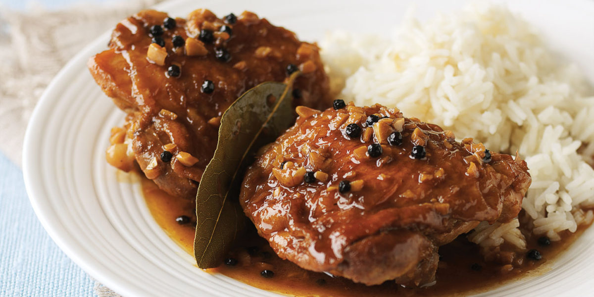

Chicken Adobo

Adobo is a style of cooking that involves marinating the main ingredient into a mix of vinegar and soy sauce.
Native in the Philippines, this chicken dish is a comfort food for all Filipinos wherever we are in the world.
Ingredients: (good for 4 people)
- 2 lbs Chicken
- 8 tbsp Soy sauce
- 4 tbsp White vinegar
- 5 cloves Garlic
- 1 tsp Whole peppercorn
- 3 pcs Dried bay leaves
- 1 tsp Sugar
- 1/4 tsp Salt
- 1 1/2 cups Water
- 3 tbsp Cooking oil
Instructions: (the way I like it)
- Add the Chicken into a bowl with Soy sauce, White vinegar, Garlic, Whole peppercorn, and Dried Bay leaves.
- Pour cooking oil onto the heated pan.
- Pan-fry the Chicken (remove from the sauce) for 2 minutes per side (or longer if you prefer), then set aside.
- On a pot, sauté the Garlic until the color turns to light brown. Note: this is a key step as my key ingredient is Garlic
- Pour the sauce onto the pan, then add Water.
- Add the Chicken. Simmer for 30 mins. or until the Chicken gets tender.
- Add Vinegar and/or Soy sauce and cook for 10 mins.
- To taste, put in the Sugar, Salt, Pepper (this part here I will give to you lol). Stir, then turn the heat off.
- It's Ready! Serve hot and Enjoy!